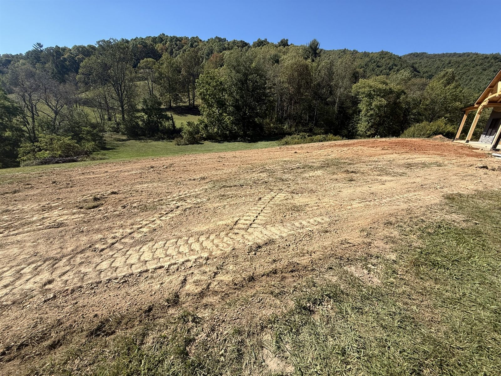

Built for Western NC Ground.
Locally owned, Burnsville-based, and led by a licensed commercial General Contractor, built to handle the steep, wet, rocky work the mountains throw at a job site.
A Local Operation That Can Carry the Whole Job
Austin Grading & Land Management is a locally owned and operated site-work contractor based in Burnsville, North Carolina. We do professional-grade excavation, grading, drainage, and land development, and we do it for the ground we live on.
The company is led by owner Matthew Austin, a NC Licensed Commercial General Contractor and an NCDOT pre-qualified contractor. That combination is rare among local site contractors: it means AGLM can hold prime contracts and work directly for the state, not just sub out small jobs.

What Sets AGLM Apart
Licensed & Pre-Qualified
NC licensed commercial GC and NCDOT pre-qualified, vetted to carry prime contracts and state work.
Local & Accountable
Burnsville-based. You talk to the owner, not a call center in another state.
Mountain-Terrain Expertise
Steep-slope grading, drainage, and erosion control built for WNC ground.
Right-Sized
Big enough to carry commercial scopes, small enough to show up and move fast.
Proven Work
Code-compliant and 5.0-rated, with references available on request.
Full-Scope Capability
The complete site-work scope, excavation through final grade, under one accountable partner.
Licensed & insured. Bonding and insurance details available on request.
Let's talk about your project.
Tell us about the site. We'll get back fast.